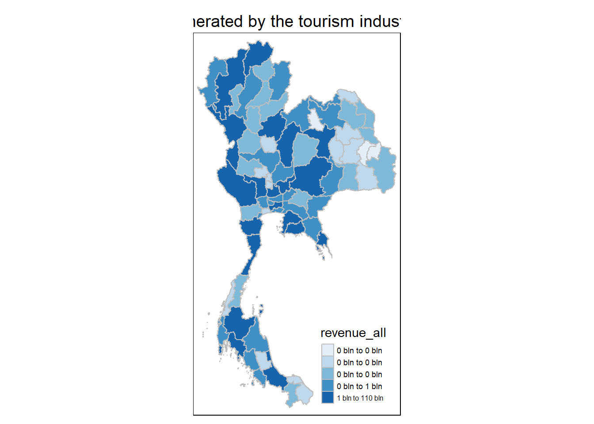
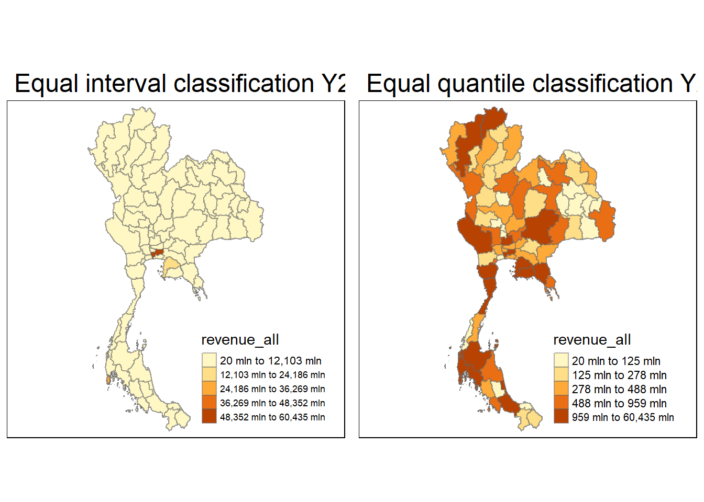

pacman::p_load(sf, sfdep, tmap, lubridate, tidyverse)Take Home Exercise 2 : Discovering impacts of COVID-19 on Thailand tourism economy at the province level using spatial and spatio-temporal statistics
1. Setting the Scene
Tourism is one of Thailand’s largest industries, accounting for some 20% of the gross domestic product (GDP). In 2019, Thailand earned 90 billion US$ from domestic and international tourism, but the COVID-19 pandemic caused revenues to crash to 24 billion US$ in 2020.
Figure below shows the total revenue receipt from tourism sector from January 2019 until Feb 2023. The figure reveals that the revenue from tourism industry have been recovered gradually since September 2021.

However, it is important to note that the tourism economy of Thailand are not evenly distributed. Figure below reveals that the tourism economy of Thailand are mainly focus on five provinces, namely Bangkok, Phuket, Chiang Mai, Sukhothai and Phetchaburi.

2. Objectives
As a a curious geospatial analytics green horn, we are interested to discover:
if the key indicators of tourism economy of Thailand are independent from space and space and time.
If the tourism economy is indeed spatial and spatio-temporal dependent, then, you would like to detect where are the clusters and outliers, and the emerging hot spot/cold spot areas.
3. The Task
The specific tasks of this take-home exercise are as follows:
Using appropriate function of sf and tidyverse, preparing the following geospatial data layer: a study area layer in sf polygon features. It must be at province level (including Bangkok) of Thailand. a tourism economy indicators layer within the study area in sf polygon features. a derived tourism economy indicator layer in spacetime s3 class of sfdep. Keep the time series at month and year levels. Using the extracted data, perform global spatial autocorrelation analysis by using sfdep methods. Using the extracted data, perform local spatial autocorrelation analysis by using sfdep methods. Using the extracted data, perform emerging hotspot analysis by using sfdep methods. Describe the spatial patterns revealed by the analysis above.
4. The Data
For the purpose of this take-home exercise, two data sets shall be used, they are:
Thailand Domestic Tourism Statistics at Kaggle. You are required to use version 2 of the data set.
Thailand - Subnational Administrative Boundaries at HDX. You are required to use the province boundary data set.
5. Importing Packages
Before we start the exercise, we will need to import necessary R packages first. We will use the following packages:
sf package provides functions to manage, processing, and manipulate Simple Features, a formal geospatial data standard that specifies a storage and access model of spatial geometries such as points, lines, and polygons.
tmap which provides functions for plotting cartographic quality static point patterns maps or interactive maps by using leaflet API.
sfdep which provide functions for utilizes list columns extensively to make this interface possible.
smoothr which provide functions for smoothing and tidying spatial features (i.e. lines and polygons) to make them more aesthetically pleasing.
lubridate which provide functions to work with date-times and time-spans: fast and user friendly parsing of date-time data, extraction and updating of components of a date-time (years, months, days, hours, minutes, and seconds), algebraic manipulation on date-time and time-span objects.
Use the code chunk below to install and launch the below R packages.
6. Getting the Data Into R Environment
In this section, we will learn how to bring a geospatial data and its associated attribute table into R environment. The geospatial data is in ESRI shapefile format and the attribute table is in csv fomat.
6.1 Import shapefile into r environment
6.1.1 Thailand Domestic Tourism Statistics
tourism_data <- read_csv("data/rawdata/thailand_domestic_tourism_2019_2023_ver2.csv")
# Update with actual pathglimpse(tourism_data)Rows: 30,800
Columns: 7
$ date <date> 2019-01-01, 2019-01-01, 2019-01-01, 2019-01-01, 2019-01…
$ province_thai <chr> "กรุงเทพมหานคร", "ลพบุรี", "พระนครศรีอยุธยา", "สระบุรี", "ชัยนาท…
$ province_eng <chr> "Bangkok", "Lopburi", "Phra Nakhon Si Ayutthaya", "Sarab…
$ region_thai <chr> "ภาคกลาง", "ภาคกลาง", "ภาคกลาง", "ภาคกลาง", "ภาคกลาง", "…
$ region_eng <chr> "central", "central", "central", "central", "central", "…
$ variable <chr> "ratio_tourist_stay", "ratio_tourist_stay", "ratio_touri…
$ value <dbl> 93.37, 61.32, 73.37, 67.33, 79.31, 71.70, 64.65, 71.21, …Variables:
no_tourist_all |
The total number of domestic tourists who visited the province |
no_tourist_foreign |
The number of foreign tourists who visited the province |
no_tourist_stay |
The number of tourists who stay over-night |
no_tourist_thai |
The number of Thai tourists who visited the province |
ratio_tourist_stay |
The ratio of tourist stay over-night. |
revenue_all |
The revenue generated by the tourism industry in the province, in Thai Baht |
revenue_foreign |
The revenue generated by foreign tourists in the province, in Thai Baht |
revenue_thai |
The revenue generated by Thai tourists in the province, in Thai Baht |
6.1.1.2 Reshape the Data
Use pivot_wider to create new columns based on the variables in Column F, using Column G as the values.
tourism_data_wide <- tourism_data %>%
pivot_wider(
names_from = variable,
values_from = value,
values_fill = NA # Fill missing values with NA
)
tourism_data_wide# A tibble: 3,850 × 13
date province_thai province_eng region_thai region_eng
<date> <chr> <chr> <chr> <chr>
1 2019-01-01 กรุงเทพมหานคร Bangkok ภาคกลาง central
2 2019-01-01 ลพบุรี Lopburi ภาคกลาง central
3 2019-01-01 พระนครศรีอยุธยา Phra Nakhon Si Ayutthaya ภาคกลาง central
4 2019-01-01 สระบุรี Saraburi ภาคกลาง central
5 2019-01-01 ชัยนาท Chainat ภาคกลาง central
6 2019-01-01 นครปฐม Nakhon Pathom ภาคกลาง central
7 2019-01-01 สิงห์บุรี Sing Buri ภาคกลาง central
8 2019-01-01 อ่างทอง Ang Thong ภาคกลาง central
9 2019-01-01 นนทบุรี Nonthaburi ภาคกลาง central
10 2019-01-01 ปทุมธานี Pathum Thani ภาคกลาง central
# ℹ 3,840 more rows
# ℹ 8 more variables: ratio_tourist_stay <dbl>, no_tourist_stay <dbl>,
# no_tourist_all <dbl>, no_tourist_thai <dbl>, no_tourist_foreign <dbl>,
# revenue_all <dbl>, revenue_thai <dbl>, revenue_foreign <dbl>6.1.1.2 Select Relevant Columns
After reshaping, select only the relevant columns for your analysis. Also, create new columns for month, month factor and month-year.
tourism_data_new <- tourism_data_wide %>%
select(date, province_thai, province_eng, region_eng,
no_tourist_all, no_tourist_foreign,
no_tourist_stay, no_tourist_thai,
ratio_tourist_stay, revenue_all,
revenue_foreign, revenue_thai) %>%
mutate(
Month_num = month(date), # Extract numeric month
Month_fac = month(date, label = TRUE, abbr = TRUE), # Extract abbreviated month as factor
Month_year = paste0(Month_fac, "-", year(date)) # Create 'month-year' column
)
print(tourism_data_new)# A tibble: 3,850 × 15
date province_thai province_eng region_eng no_tourist_all
<date> <chr> <chr> <chr> <dbl>
1 2019-01-01 กรุงเทพมหานคร Bangkok central 5959075
2 2019-01-01 ลพบุรี Lopburi central 268664
3 2019-01-01 พระนครศรีอยุธยา Phra Nakhon Si Ayutthaya central 730329
4 2019-01-01 สระบุรี Saraburi central 207236
5 2019-01-01 ชัยนาท Chainat central 79073
6 2019-01-01 นครปฐม Nakhon Pathom central 296107
7 2019-01-01 สิงห์บุรี Sing Buri central 49438
8 2019-01-01 อ่างทอง Ang Thong central 104097
9 2019-01-01 นนทบุรี Nonthaburi central 323717
10 2019-01-01 ปทุมธานี Pathum Thani central 233295
# ℹ 3,840 more rows
# ℹ 10 more variables: no_tourist_foreign <dbl>, no_tourist_stay <dbl>,
# no_tourist_thai <dbl>, ratio_tourist_stay <dbl>, revenue_all <dbl>,
# revenue_foreign <dbl>, revenue_thai <dbl>, Month_num <dbl>,
# Month_fac <ord>, Month_year <chr>6.1.2 Thailand - Subnational Administrative Boundaries
# Load province boundaries
provinces <- st_read(dsn = "data/rawdata",
layer = "tha_admbnda_adm1_rtsd_20220121") %>%
st_transform(crs = 32647) %>%
mutate(ADM1_EN = recode(ADM1_EN, # Update province boundaries' name
"Lop Buri" = "Lopburi",
"Chai Nat" = "Chainat",
"Chon Buri" = "Chonburi",
"Prachin Buri" = "Prachinburi",
"Phangnga" = "Phang Nga",
"Buri Ram" = "Buriram",
"Si Sa Ket" = "Sisaket",
"Nong Bua Lam Phu" = "Nong Bua Lamphu"
))Reading layer `tha_admbnda_adm1_rtsd_20220121' from data source
`C:\Users\user\OneDrive - Singapore Management University\MITB\6. Geospatial Analytics and Applications\jeffleesl\ISSS626-GAA\Take-Home_Ex\Take-Home_Ex02\data\rawdata'
using driver `ESRI Shapefile'
Simple feature collection with 77 features and 16 fields
Geometry type: MULTIPOLYGON
Dimension: XY
Bounding box: xmin: 97.34336 ymin: 5.613038 xmax: 105.637 ymax: 20.46507
Geodetic CRS: WGS 84# Load province boundaries
glimpse(provinces)Rows: 77
Columns: 17
$ Shape_Leng <dbl> 2.417227, 1.695100, 1.251111, 1.884945, 3.041716, 1.739908,…
$ Shape_Area <dbl> 0.13133873, 0.07926199, 0.05323766, 0.12698345, 0.21393797,…
$ ADM1_EN <chr> "Bangkok", "Samut Prakan", "Nonthaburi", "Pathum Thani", "P…
$ ADM1_TH <chr> "กรุงเทพมหานคร", "สมุทรปราการ", "นนทบุรี", "ปทุมธานี", "พระนครศรีอ…
$ ADM1_PCODE <chr> "TH10", "TH11", "TH12", "TH13", "TH14", "TH15", "TH16", "TH…
$ ADM1_REF <chr> NA, NA, NA, NA, NA, NA, NA, NA, NA, NA, NA, NA, NA, NA, NA,…
$ ADM1ALT1EN <chr> NA, NA, NA, NA, NA, NA, NA, NA, NA, NA, NA, NA, NA, NA, NA,…
$ ADM1ALT2EN <chr> NA, NA, NA, NA, NA, NA, NA, NA, NA, NA, NA, NA, NA, NA, NA,…
$ ADM1ALT1TH <chr> NA, NA, NA, NA, NA, NA, NA, NA, NA, NA, NA, NA, NA, NA, NA,…
$ ADM1ALT2TH <chr> NA, NA, NA, NA, NA, NA, NA, NA, NA, NA, NA, NA, NA, NA, NA,…
$ ADM0_EN <chr> "Thailand", "Thailand", "Thailand", "Thailand", "Thailand",…
$ ADM0_TH <chr> "ประเทศไทย", "ประเทศไทย", "ประเทศไทย", "ประเทศไทย", "ประเทศ…
$ ADM0_PCODE <chr> "TH", "TH", "TH", "TH", "TH", "TH", "TH", "TH", "TH", "TH",…
$ date <date> 2019-02-18, 2019-02-18, 2019-02-18, 2019-02-18, 2019-02-18…
$ validOn <date> 2022-01-22, 2022-01-22, 2022-01-22, 2022-01-22, 2022-01-22…
$ validTo <date> -001-11-30, -001-11-30, -001-11-30, -001-11-30, -001-11-30…
$ geometry <MULTIPOLYGON [m]> MULTIPOLYGON (((674339.8 15..., MULTIPOLYGON (…6.2 Performing relational join
The code chunk below will be used to update the attribute table of provinces’ SpatialPolygonsDataFrame with the attribute fields of tourismdatanew dataframe. This is performed by using left_join() of dplyr package.
6.2.1 Using Province in English
# Left join to add geometries from thailand bundaries shapefile
tourism_sf <- tourism_data_new %>%
left_join(provinces, by = c("province_eng" = "ADM1_EN"))
# Ensure the data is a valid sf object
tourism_sf <- st_as_sf(tourism_sf)
# Select specific columns (1:19, 25:28, and 31)
tourism_sf <- tourism_sf %>%
select(1:19, 25:28, 31)
# Check if transformation was successful
st_crs(tourism_sf)Coordinate Reference System:
User input: EPSG:32647
wkt:
PROJCRS["WGS 84 / UTM zone 47N",
BASEGEOGCRS["WGS 84",
ENSEMBLE["World Geodetic System 1984 ensemble",
MEMBER["World Geodetic System 1984 (Transit)"],
MEMBER["World Geodetic System 1984 (G730)"],
MEMBER["World Geodetic System 1984 (G873)"],
MEMBER["World Geodetic System 1984 (G1150)"],
MEMBER["World Geodetic System 1984 (G1674)"],
MEMBER["World Geodetic System 1984 (G1762)"],
MEMBER["World Geodetic System 1984 (G2139)"],
ELLIPSOID["WGS 84",6378137,298.257223563,
LENGTHUNIT["metre",1]],
ENSEMBLEACCURACY[2.0]],
PRIMEM["Greenwich",0,
ANGLEUNIT["degree",0.0174532925199433]],
ID["EPSG",4326]],
CONVERSION["UTM zone 47N",
METHOD["Transverse Mercator",
ID["EPSG",9807]],
PARAMETER["Latitude of natural origin",0,
ANGLEUNIT["degree",0.0174532925199433],
ID["EPSG",8801]],
PARAMETER["Longitude of natural origin",99,
ANGLEUNIT["degree",0.0174532925199433],
ID["EPSG",8802]],
PARAMETER["Scale factor at natural origin",0.9996,
SCALEUNIT["unity",1],
ID["EPSG",8805]],
PARAMETER["False easting",500000,
LENGTHUNIT["metre",1],
ID["EPSG",8806]],
PARAMETER["False northing",0,
LENGTHUNIT["metre",1],
ID["EPSG",8807]]],
CS[Cartesian,2],
AXIS["(E)",east,
ORDER[1],
LENGTHUNIT["metre",1]],
AXIS["(N)",north,
ORDER[2],
LENGTHUNIT["metre",1]],
USAGE[
SCOPE["Navigation and medium accuracy spatial referencing."],
AREA["Between 96°E and 102°E, northern hemisphere between equator and 84°N, onshore and offshore. China. Indonesia. Laos. Malaysia - West Malaysia. Mongolia. Myanmar (Burma). Russian Federation. Thailand."],
BBOX[0,96,84,102]],
ID["EPSG",32647]]6.2.2 Using Province in Thai (Showing Other Method)
# Left join to add geometries from thailand bundaries shapefile
# tourism_sf_th <- tourism_data_new %>%
# left_join(provinces, by = c("province_thai" = "ADM1_TH"))
# Ensure the data is a valid sf object
#tourism_sf_th <- st_as_sf(tourism_sf_th)
# Check if transformation was successful
# st_crs(tourism_sf_th)7.Derived Tourism Economy Indicator Layer
It is always a good practice to use set.seed() before performing simulation. This is to ensure that the computation is reproducible.
set.seed(1234)7.1 Plotting a choropleth map
Plot a choropleth map showing the distribution of revenue generated by the tourism industry in the different province, in Thai Baht
tmap_mode("plot")
tm_shape(tourism_sf) +
tm_fill("revenue_all",
style = "quantile",
palette = "Blues",
title = "revenue_all") +
tm_borders(col = "grey") +
tm_layout(main.title = "Distribution of revenue generated by the tourism industry in the different province",
main.title.position = "center",
main.title.size = 1.2,
legend.height = 0.45,
legend.width = 0.35,
frame = TRUE)
7.1.1 Calculate the Average Revenue for Each Province
# Calculate the average revenue_all for each province
tourism_sf_avg <- tourism_sf %>%
group_by(province_thai) %>%
summarize(average_revenue_all = mean(revenue_all, na.rm = TRUE))7.1.2 Join the Average Revenue Back to the Spatial Data
# Join the average revenue back to the spatial data
tourism_sf_avg <- left_join(st_drop_geometry(tourism_sf), tourism_sf_avg, by = "province_thai")
tourism_sf_avg <- st_as_sf(tourism_sf_avg)7.1.3 Modify the Plot Code to Use average_revenue_all
tmap_mode("plot")
tm_shape(tourism_sf_avg) +
tm_fill("average_revenue_all", # Use average revenue
style = "quantile", # Use quantile classification
palette = "Blues", # Choose color palette
title = "Average Revenue (All)") +
tm_borders(col = "grey") +
tm_layout(main.title = "Average Revenue Generated by Tourism Industry in Different Provinces",
main.title.position = "center",
main.title.size = 1.2,
legend.height = 0.45,
legend.width = 0.35,
frame = TRUE)
7.2 Visualising Regional Development Indicator
Now, we are going to prepare a basemap and a choropleth map showing the distribution of the revenue by using qtm() of tmap package.
7.2.1 Equal interval classification and Equal quantile classification
equal <- tm_shape(tourism_sf) +
tm_fill("revenue_all",
n = 5,
style = "equal") +
tm_borders(alpha = 0.5) +
tm_layout(main.title = "Equal interval classification")
quantile <- tm_shape(tourism_sf) +
tm_fill("revenue_all",
n = 5,
style = "quantile") +
tm_borders(alpha = 0.5) +
tm_layout(main.title = "Equal quantile classification")
tmap_arrange(equal,
quantile,
asp=1,
ncol=2)
7.2.2 Equal interval classification Y2023 and Equal quantile classification Y2023
tourism_sf_2023 <- tourism_sf %>%
filter(year(date.x) == 2023)
equal_2023 <- tm_shape(tourism_sf_2023) +
tm_fill("revenue_all",
n = 5,
style = "equal") +
tm_borders(alpha = 0.5) +
tm_layout(main.title = "Equal interval classification Y2023")
quantile_2023 <- tm_shape(tourism_sf_2023) +
tm_fill("revenue_all",
n = 5,
style = "quantile") +
tm_borders(alpha = 0.5) +
tm_layout(main.title = "Equal quantile classification Y2023")
tmap_arrange(equal_2023,
quantile_2023,
asp=1,
ncol=2)
8. Global Spatial Autocorrelation Analysis
8.1 Step 1: Deriving Queen’s contiguity weights: sfdep methods
#wm_q <- tourism_sf %>%
#mutate(nb = st_contiguity(geometry),
#wt = st_weights(nb,
#style = "W"),
#.before = 1)# Create weights for spatial autocorrelation
#tourism_neighbors <- tourism_sf %>%
#st_contiguity()# Create weights for spatial autocorrelation
#tourism_neighbors <- tourism_sf %>%
#st_contiguity()# Global Moran's I for tourism data
#global_moran_test <- tourism_sf %>%
#global_moran(variable = "no_tourist_all", nb = tourism_neighbors)
# Print the results
#global_moran_test9. Local Spatial Autocorrelation Analysis
# Local Moran's I for tourism data
#local_moran_test <- tourism_sf %>%
#local_moran(variable = "no_tourist_all", nb = tourism_neighbors)
# Print the results
#local_moran_test10. Emerging Hotspot Analysis
# Emerging Hotspot Analysis (temporal data should be converted to spacetime class)
#tourism_spacetime <- as_spacetime(tourism_sf, time_var = "date", geometry = "geometry")
#hotspot_analysis <- tourism_spacetime %>%
#emerging_hotspot(variable = "no_tourist_all", nb = tourism_neighbors)
# View the results
#hotspot_analysis11. Conclusion
Global Autocorrelation: A significant positive Moran’s I indicates clustering of high or low values.
Local Autocorrelation: Identify specific provinces with high or low values using LISA results.
Hotspots: Areas with high positive Gi* scores are emerging hotspots, while negative scores indicate cold spots.
#ggplot(data = tourism_monthly) +
#geom_sf(aes(fill = hotspot)) +
#theme_minimal() +
#labs(title = "Emerging Hotspots in Thailand's Tourism Economy")This framework allows us to explore spatial dependencies in Thailand’s tourism economy effectively. Adjust paths and variable names according to your specific datasets.
Output is saved in rds format for future used.
write_rds(tourism_sf,"data/rds/tourism.rds")The code chunk below will be used to import the save origin6_9.rds into R environment.
acc <- read_rds("data/rds/tourism.rds")